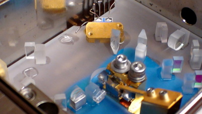

  |
The LWE-142 use a nonplanar ring oscillator (NPRO)
based on a monolithic
Nd:YAG crystal. See:
http://www.rp-photonics.com/encyclopedia_n.html#k_nonplanar_ring_oscillators
for some info on the NPRO laser design.
The output of the NPRO is at 1,064 nm with a single frequency and single
spatial mode (TEM00). This feeds a separate resonant frequency doubler -
outside the cavity, unlike virtually all other CW green lasers. Most of
the desirable characteristics of the NPRO laser are preserved after
doubling including the narrow line-width and low noise resulting in a
super coherence length, estimated to be greater than 1000 meters.
The LWE-142
is a high quality single frequency green (532 nm) DPSS laser based on a very
elegant but unusual design. This laser was developed by Lightwave Electronics,
now a part of JDS Uniphase. Go to JDS Uniphase,
"Product Categories: Commercial Lasers", "Solid State
Lasers", "Laser, Solid-State, CW, 532 (NPRO 142)".
Three
things differentiate the LWE-142 from other lasers in the same power class:
- A monolithic NonPlanar
Ring Oscillator (NPRO) at the fundamental frequency of 1,064 nm. The NPRO
is inherently single frequency (single longitudinal mode), has very low
noise and narrow linewidth, and is very robust with no chance of changes
in internal alignment, or contamination of intracavity optics.
- An external monolithic
resonant frequency doubler to obtain 532 nm. Most of the desirable
characteristics of the NPRO are preserved in the doubling process. The
doubler possesses the same immunity to misalignment and contamination.
- A control algorithm in firmware
to identify and lock the lasing mode to a longitudinal (axial) doubler
mode and maintain constant power.
The heart
of the LWE-142 is the NPRO, fabricated from a single (monolithic) Nd:YAG
crystal. (The original acronym was "MISER" standing for: Monolithic
Isolated Single-mode End-pumped Ring, but NPRO seems to have become more
popular.) The NPRO crystal is cut in a very specific way that results in the
intracavity beam not bouncing around in a single plane inside the crystal as
would be the case in a conventional ring laser. This is shown in NonPlanar Ring Oscillator
(NPRO) Geometry. In the diagram, the beam path is from the front (curved)
surface, to the angled surface on the far right, up to the top surface, down to
the angled surface on the far left, and back to the front surface, which
accepts the pump beam, serves as the output coupler for the laser beam, and
acts as a weak polarizer in reflection for the intracavity beam. All but the
input/output surface are planar and angled for total internal reflection so
losses are very close to zero.
|


{kind=link}